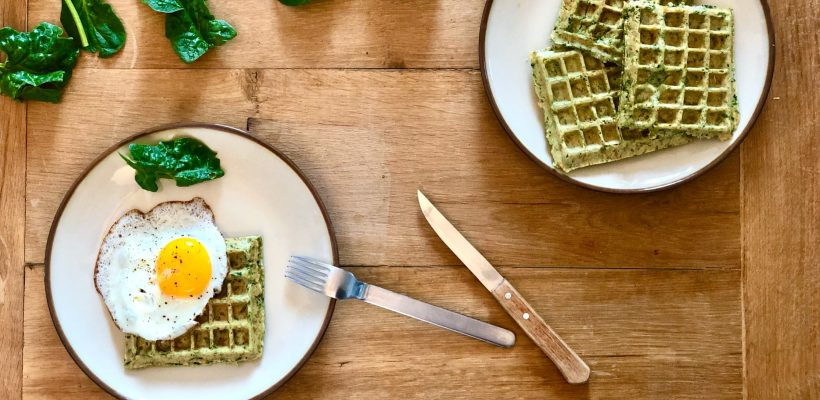

Pour un repas ou un brunch, ces petites gaufres salées sont idéales 😊
Elles sont réalisées avec de l’épinard, qui a un fort pouvoir antioxydant, ce qui l’implique dans la prévention de nombreuses maladies.
Ingrédients6 à 8 gaufres
- 100g de farine de sarrasin
- 100g de farine de blé semi-complète
- 150g de pousses d’épinards frais
- 3 oeufs
- 100g de yaourt à la grecque
- 50g de comté râpé
- 25 cl de lait (animal ou végétal)
- 1 sachet de levure

1
Lavez et équeutez les épinards. Faites-les cuire dans une poêle bien chaude avec un filet d’huile d’olive pendant 3 minutes, en couvrant la poêle. Les épinards vont fortement réduire. Puis hachez-les finement.

2
Dans un saladier mélangez les oeufs, le yaourt et le lait. Ajoutez ensuite progressivement la farine, puis la levure.

3
Incorporez les épinards et le comté. Salez et poivrez.

4
Faites cuire au gaufrier pendant 3 à 4 minutes. Servez avec un oeuf sur le plat et / ou une salade de crudités.
Bon appétit 😊

Delicieux. Je rajoute des morceaux de chorizo c’est délicieux….
Bon mais un peu sec. A manger avec une garniture
Bonjour pourriez vous faire des versions imprimables sur 1 ou 2 pages de vos recettes ?
Merci
Recette originale, très bonne et facile à réaliser!
Très bonne recette, hyper simple. J’ai doublé la quantité d’épinards (vive le potager !) et mis que 150ml de lait. Parfait !
Très bon
Merci pour cette recette, appétissante et originale, je vais la réaliser!
Trop bon !!! Et j’avais un reste de ratatouille qui est très bien allé avec 🙂
Les pousses d épinards frais arrivent au Aldi le 28 avril ( 1€65 les 500gr). Le catalogue est en ligne
Au départ ils sont crus ( ils viennent d’être cueillis ) puis ils passeront à la casserole 5 minutes après avoir été découpés.
Cordialement
Bonjour,
Sagit-il de 150g d’epinard cru ou cuit?
Je ne ferai surtout pas cuire les épinards avant! et je vais les remplacer par des feuilles d’alliaires…
Pour les galettes, c’est pareil : il faut conserver les légumes crus (râpés), c’est délicieux!
Je pratique cette recette depuis 2 ans mais ai remplacé les épinards par des fines herbes (persil ciboulette échalote ail … il faut en fait 150 gr). Mais je ne mets pas de comté…. et on peut aussi remplacer l’œuf pas une tranche de saumon fumé.
Du coup c’est pas la même recette 🙂
No
Et si on rajoute du jambon et du pain mais qu’on laisse le comté ça fait un croque monsieur 😂😂😂
Merci Blomy pour cette recette. Mon appareil à gaufres ne marche plus, je pense donc faire des petites galettes de ce mélange. Je pense que cela est équivalent. Juste l’aspect physique change. Je vais donc essayer. Merci !
Merci beaucoup ; cela changera des épinards béchamel et œufs durs….
Les épinards se font rares, je les ai remplacés par des courgettes, une tuerie merci pour cette recette parfaite pour notre brunch de confinement 🙂
Merci pour vos recettes. La semaine derniere j’ai essay la pâte à pizza avec du choux fleur excellente ! Comment faire cuire cette recette de gaufre sans gaufrier ?
Merci pour vos recettes extraordinaires et simples ,la recette des gaufres aux épinards est originale, merci
Ok je vais essayer cette recette , mare du pain. Je pensais au départ faire des crêpes aux épinards. Œuf à cheval non, petite salade oui.
Bonjour,
Très agréablement surprise de recevoir des recettes de votre part, merci
Œuf à cheval ????????????
Merci qu’elle bonne surprise….je vais essayer👍🍽
Avec un bourriquet sur la gaufre
Bonjour,
Super recette appréciée de toute la famille !
Sur Blomy des recettes excell
Sur Blomy les recettes sont excellentes .
Super recette ! Facile à réaliser et bonne manière de faire manger des épinards aux enfants 😉
Un grand merci encore pour les idées de recettes c’est très sympa de nous donner ces idées
Avec un peu de fromage frais type st moret et magret de canard un délice
Sa parait bon, je vais essayer
Un peu fades malgré assaisonnement mais bonnes…je referai c ‘est sûr avec d autres ingrédients (tomates séchées et feta – chorizo – …)
Super recette testée et approuvée par tout le monde
Testée aujourd’hui , un régal. Merci
Merci je vais essayer.
Merci pour cette belle recette! Est-ce qu’il est possible de remplacer la farine de blé (100% sarrasin ?) pour les intolérants au gluten ?
On a mis du premix Schar
Merci ! De bonnes idées que je vais essayer
Bonjour
Toutes vos recettes sont excellentes!…
Je vais essayer celle là aussi
Je suis toutes vos recommandations étant inscrite a votre programme et j en suis très satisfaite
Encore merci